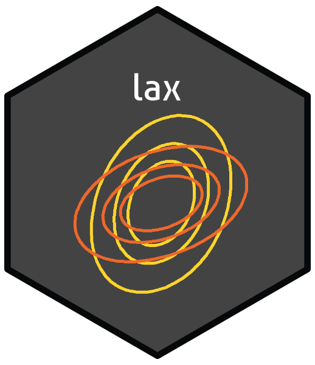

lax 


Loglikelihood Adjustment for Extreme Value Models
What does lax do?
The CRAN Task View on Extreme Value Analysis provides information about R packages that perform various extreme value analyses. The lax package supplements the univariate extreme value modelling, including regression modelling, provided by 9 of these packages, namely eva, evd, evir, extRemes, fExtremes, ismev, mev, POT and texmex. lax works in an object-oriented way, operating on R objects returned from functions in other packages that summarise the fit of an extreme value model. It uses the chandwich package to provide robust sandwich estimation of parameter covariance matrix and loglikelihood adjustment for models fitted by maximum likelihood estimation. This is performed by an alogLik S3 method, illustrated by the following example.
An example
This example is based on the analysis presented in Section 5.2 of Chandler and Bate (2007). The data, which are available in the data frame ow, are a bivariate time series of annual maximum temperatures, recorded in degrees Fahrenheit, at Oxford and Worthing in England, for the period 1901 to 1980. If interest is only in the marginal distributions of high temperatures in Oxford and Worthing, then we might fit a GEV regression model in which some or all of the parameters may vary between Oxford and Worthing. However, we should adjust for the cluster dependence between temperatures recorded during the same year.
The following code fits such a model using the fevd function in the extRemes package and the uses alogLik to perform adjusted inferences.
library(lax)
library(extRemes, quietly = TRUE)
#>
#> Attaching package: 'extRemes'
#> The following objects are masked from 'package:stats':
#>
#> qqnorm, qqplot
# Fit a GEV model with separate location, scale and shape for Oxford and Worthing
# Note: phi = log(scale)
evm_fit <- fevd(temp, ow, location.fun = ~ loc, scale.fun = ~ loc,
shape.fun = ~ loc)
# Adjust the loglikelihood and standard errors
adj_evm_fit <- alogLik(evm_fit, cluster = ow$year, cadjust = FALSE)
# MLEs, SEs and adjusted SEs
summary(adj_evm_fit)
#> MLE SE adj. SE
#> mu0 81.17000 0.32820 0.40360
#> mu1 2.66800 0.32820 0.21280
#> sigma0 3.72900 0.22930 0.24260
#> sigma1 0.53090 0.22930 0.19110
#> xi0 -0.19890 0.04938 0.03944
#> xi1 -0.08828 0.04938 0.03625An object returned from aloglik is a function to evaluate the adjusted loglikelihood, with anova, coef, confint, logLik, nobs, plot, print, summary and vcov methods.
Vignette
See vignette("lax-vignette", package = "lax") for an overview of the package.